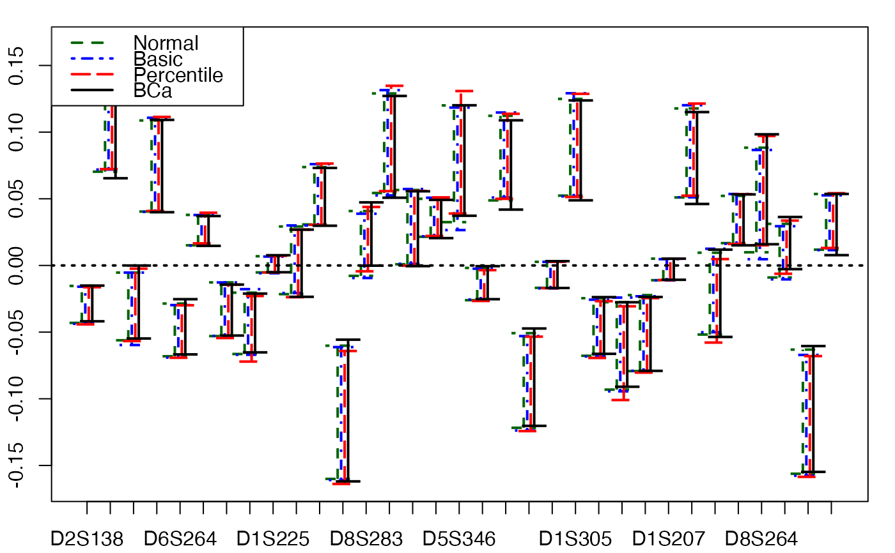

Non-parametric Bootstrap for PLS generalized linear models
bootplsglm.RdProvides a wrapper for the bootstrap function boot from the boot R package.
Implements non-parametric bootstraps for PLS Generalized Linear Regression models by either (Y,X) or (Y,T) resampling.
bootplsglm(object, typeboot="fmodel_np", R=250, statistic=coefs.plsRglmnp, sim="ordinary", stype="i", stabvalue=1e6, verbose=TRUE,...)
Arguments
| object | An object of class |
|---|---|
| typeboot | The type of bootstrap. Either (Y,X) boostrap ( |
| R | The number of bootstrap replicates. Usually this will be a single positive integer. For importance resampling, some resamples may use one set of weights and others use a different set of weights. In this case |
| statistic | A function which when applied to data returns a vector containing the statistic(s) of interest. |
| sim | A character string indicating the type of simulation required. Possible values are |
| stype | A character string indicating what the second argument of |
| stabvalue | A value to hard threshold bootstrap estimates computed from atypical resamplings. Especially useful for Generalized Linear Models. |
| verbose | should info messages be displayed ? |
| … | Other named arguments for |
Details
More details on bootstrap techniques are available in the help of the boot function.
Value
An object of class "boot". See the Value part of the help of the function boot.
References
A. Lazraq, R. Cleroux, and J.-P. Gauchi. (2003). Selecting both latent and explanatory variables in the PLS1 regression model. Chemometrics and Intelligent Laboratory Systems, 66(2):117-126.
P. Bastien, V. Esposito-Vinzi, and M. Tenenhaus. (2005). PLS generalised linear regression. Computational Statistics & Data Analysis, 48(1):17-46.
A. C. Davison and D. V. Hinkley. (1997). Bootstrap Methods and Their Applications. Cambridge University Press, Cambridge.
See also
Examples
#Imputed aze dataset data(aze_compl) Xaze_compl<-aze_compl[,2:34] yaze_compl<-aze_compl$y dataset <- cbind(y=yaze_compl,Xaze_compl) modplsglm <- plsRglm(y~.,data=dataset,3,modele="pls-glm-logistic")#> ____************************************************____ #> #> Family: binomial #> Link function: logit #> #> ____Component____ 1 ____ #> ____Component____ 2 ____ #> ____Component____ 3 ____ #> ____Predicting X without NA neither in X or Y____ #> ****________________________________________________**** #>library(boot) # Bastien (Y,T) PLS bootstrap aze_compl.bootYT <- bootplsglm(modplsglm, R=250, verbose=FALSE) boxplots.bootpls(aze_compl.bootYT)confints.bootpls(aze_compl.bootYT)#> #> D2S138 -0.0744323948 -0.003024924 -0.075314677 -0.004715257 -0.075465220 #> D18S61 0.0560278594 0.212842176 0.060341378 0.217197704 0.062966332 #> D16S422 -0.0592739258 -0.007227319 -0.059944972 -0.009885929 -0.058852179 #> D17S794 0.0289552079 0.102399236 0.030779622 0.103188981 0.032515774 #> D6S264 -0.0357058016 0.047582827 -0.031510080 0.052542759 -0.035159036 #> D14S65 -0.0590204816 -0.021030437 -0.058245951 -0.019009698 -0.060632841 #> D18S53 -0.0006303316 0.026015149 -0.001723006 0.026098955 0.002126697 #> D17S790 -0.0618916760 -0.025550131 -0.061865472 -0.025162140 -0.061963865 #> D1S225 -0.0021177716 0.021523714 -0.003402348 0.019889856 0.002142577 #> D3S1282 -0.0698078128 -0.028577264 -0.069880334 -0.028540847 -0.069727372 #> D9S179 -0.0183009639 0.007857653 -0.018351291 0.006877070 -0.017218769 #> D5S430 -0.0629820233 -0.005906842 -0.061968569 -0.006903436 -0.063144383 #> D8S283 0.0295508969 0.074676386 0.026082828 0.073795763 0.033601417 #> D11S916 0.0370415891 0.120473652 0.033859022 0.118926742 0.040418325 #> D2S159 0.0089537729 0.066148731 0.010996601 0.067904678 0.012380808 #> D16S408 -0.0200099727 0.011218957 -0.021718429 0.009665839 -0.019967670 #> D5S346 0.0406453727 0.101006071 0.034865251 0.100212838 0.044586459 #> D10S191 -0.0225940091 0.048179639 -0.021825025 0.050368168 -0.018485598 #> D13S173 0.0235305079 0.070207324 0.023521036 0.071707664 0.024748912 #> D6S275 -0.0930330494 -0.020056480 -0.092501942 -0.018938327 -0.090715013 #> D15S127 0.0013569292 0.027281869 0.000330581 0.026770231 0.002848107 #> D1S305 0.0229169389 0.081530631 0.024753858 0.080593897 0.029637261 #> D4S394 -0.0833655179 -0.021046978 -0.082378691 -0.022496990 -0.083259341 #> D20S107 -0.1230000092 -0.033666358 -0.124249975 -0.034706531 -0.126047997 #> D1S197 -0.1888782284 -0.028871897 -0.191497863 -0.035886761 -0.189772848 #> D1S207 0.0148025767 0.070358279 0.016430506 0.070932560 0.019043673 #> D10S192 0.0305796979 0.101724593 0.032484106 0.103681647 0.033960934 #> D3S1283 -0.1107262859 -0.044637984 -0.111179556 -0.042654544 -0.111664195 #> D4S414 -0.0507463231 0.027267737 -0.048202025 0.030090068 -0.047814444 #> D8S264 0.0388457326 0.092907373 0.034245036 0.092662582 0.041873638 #> D22S928 0.0131694833 0.042368154 0.012022863 0.041475298 0.016856072 #> TP53 -0.2151710836 -0.070271535 -0.218341778 -0.069875302 -0.221916228 #> D9S171 -0.0268675206 0.016646039 -0.026908754 0.016576617 -0.022924373 #> #> D2S138 -0.004865799 -0.0708113196 0.003161438 #> D18S61 0.219822657 0.0439845740 0.205216164 #> D16S422 -0.008793136 -0.0568949925 -0.004665858 #> D17S794 0.104925133 0.0225084960 0.097696041 #> D6S264 0.048893803 -0.0381772100 0.047384115 #> D14S65 -0.021396588 -0.0608314640 -0.021448143 #> D18S53 0.029948658 -0.0007417014 0.027188087 #> D17S790 -0.025260533 -0.0624763355 -0.025391737 #> D1S225 0.025434780 0.0019678149 0.025082058 #> D3S1282 -0.028387885 -0.0696657603 -0.028073266 #> D9S179 0.008009592 -0.0170627874 0.010807663 #> D5S430 -0.008079250 -0.0609691973 -0.004066983 #> D8S283 0.081314351 0.0325398047 0.076533517 #> D11S916 0.125486045 0.0398849086 0.123505592 #> D2S159 0.069288884 0.0037018336 0.064292501 #> D16S408 0.011416598 -0.0189856739 0.012497943 #> D5S346 0.109934045 0.0427181129 0.105194460 #> D10S191 0.053707594 -0.0285508290 0.049684114 #> D13S173 0.072935539 0.0215837453 0.068130692 #> D6S275 -0.017151399 -0.0930550986 -0.018358734 #> D15S127 0.029287757 0.0032348912 0.029307494 #> D1S305 0.085477301 0.0230024345 0.082402400 #> D4S394 -0.023377641 -0.0827591538 -0.022681533 #> D20S107 -0.036504554 -0.1166664992 -0.028688480 #> D1S197 -0.034161745 -0.1786688934 -0.017414520 #> D1S207 0.073545727 0.0099855083 0.067638197 #> D10S192 0.105158475 0.0260740471 0.098717273 #> D3S1283 -0.043139183 -0.1116552310 -0.042999709 #> D4S414 0.030477649 -0.0527829620 0.028643950 #> D8S264 0.100291184 0.0396907649 0.093474386 #> D22S928 0.046308507 0.0158708376 0.044399179 #> TP53 -0.073449752 -0.2118538276 -0.067204949 #> D9S171 0.020560998 -0.0264022458 0.018055003 #> attr(,"typeBCa") #> [1] TRUEaze_compl.tilt.boot <- tilt.bootplsglm(modplsglm, statistic=coefs.plsRglm, R=c(499, 100, 100), alpha=c(0.025, 0.975), sim="ordinary", stype="i", index=1) # PLS bootstrap balanced aze_compl.bootYT <- bootplsglm(modplsglm, sim="balanced", R=250, verbose=FALSE) boxplots.bootpls(aze_compl.bootYT)confints.bootpls(aze_compl.bootYT)#> #> D2S138 -0.0743368165 -0.006195406 -0.0774751217 -0.006147435 -0.0740330412 #> D18S61 0.0611080254 0.217197166 0.0661414898 0.228104888 0.0520591477 #> D16S422 -0.0594748396 -0.009357887 -0.0614354028 -0.009886781 -0.0588513260 #> D17S794 0.0308500605 0.104219247 0.0334829495 0.109682148 0.0260226071 #> D6S264 -0.0298985035 0.047571175 -0.0311228795 0.049325041 -0.0319413181 #> D14S65 -0.0593860803 -0.019457937 -0.0594555051 -0.017828563 -0.0618139761 #> D18S53 0.0011816989 0.026497022 0.0017848046 0.025278549 0.0029471032 #> D17S790 -0.0625282949 -0.024199465 -0.0627462578 -0.025346848 -0.0617791568 #> D1S225 -0.0005731306 0.021940700 -0.0015452714 0.021719244 0.0003131878 #> D3S1282 -0.0705812824 -0.027327892 -0.0717148122 -0.029717309 -0.0685509094 #> D9S179 -0.0177793414 0.006926445 -0.0187025117 0.005553067 -0.0158947655 #> D5S430 -0.0626139555 -0.007875394 -0.0661609473 -0.009067300 -0.0609805195 #> D8S283 0.0284268612 0.077467113 0.0277630512 0.077646239 0.0297509409 #> D11S916 0.0344125924 0.122369992 0.0324256502 0.117783539 0.0415615281 #> D2S159 0.0120374920 0.067414617 0.0137234812 0.069806736 0.0104787495 #> D16S408 -0.0198974504 0.009335438 -0.0205753577 0.008662182 -0.0189640132 #> D5S346 0.0384192144 0.104406012 0.0371878245 0.104605536 0.0401937600 #> D10S191 -0.0170516790 0.048463083 -0.0166087082 0.048295737 -0.0164131669 #> D13S173 0.0241726513 0.071741821 0.0253054161 0.076128669 0.0203279067 #> D6S275 -0.0905315350 -0.018300973 -0.0905575430 -0.014546186 -0.0951071541 #> D15S127 0.0013816699 0.027379897 0.0005607717 0.026154278 0.0034640607 #> D1S305 0.0245065531 0.084143406 0.0261033064 0.082103605 0.0281275535 #> D4S394 -0.0836261836 -0.022256926 -0.0894339802 -0.023832841 -0.0819234908 #> D20S107 -0.1245706145 -0.035788145 -0.1305269115 -0.038001891 -0.1227526374 #> D1S197 -0.1901814270 -0.035359237 -0.1972667734 -0.038269320 -0.1873902889 #> D1S207 0.0172299146 0.071894325 0.0188936350 0.074640966 0.0153352672 #> D10S192 0.0323737078 0.104198201 0.0333530308 0.109543433 0.0280991483 #> D3S1283 -0.1114815299 -0.042118351 -0.1119951180 -0.043587440 -0.1107312993 #> D4S414 -0.0450143989 0.027455608 -0.0435513651 0.029271718 -0.0469960935 #> D8S264 0.0367385709 0.096105181 0.0355351854 0.097760618 0.0367756015 #> D22S928 0.0134880373 0.043885662 0.0132637268 0.042959930 0.0153714408 #> TP53 -0.2187038469 -0.072070530 -0.2320929755 -0.077097862 -0.2146936676 #> D9S171 -0.0233169091 0.016745759 -0.0231672799 0.016116665 -0.0224644207 #> #> D2S138 -0.002705355 -0.0692934366 0.0021303073 #> D18S61 0.214022545 0.0474826888 0.2092101538 #> D16S422 -0.007302705 -0.0566936032 -0.0029291407 #> D17S794 0.102221806 0.0224931566 0.1016000571 #> D6S264 0.048506602 -0.0367800987 0.0426318035 #> D14S65 -0.020187034 -0.0617457446 -0.0196666462 #> D18S53 0.026440848 0.0023709898 0.0256992748 #> D17S790 -0.024379747 -0.0611888969 -0.0190248218 #> D1S225 0.023577704 0.0001397904 0.0235642138 #> D3S1282 -0.026553407 -0.0674029279 -0.0214146604 #> D9S179 0.008360813 -0.0154673733 0.0085856067 #> D5S430 -0.003886872 -0.0573462865 -0.0008709598 #> D8S283 0.079634128 0.0270257384 0.0764472960 #> D11S916 0.126919417 0.0390294772 0.1249285409 #> D2S159 0.066562004 0.0100305469 0.0660889176 #> D16S408 0.010273526 -0.0178171945 0.0121778841 #> D5S346 0.107611472 0.0345183331 0.1041549006 #> D10S191 0.048491278 -0.0189406762 0.0457993445 #> D13S173 0.071151159 0.0183066113 0.0694217425 #> D6S275 -0.019095797 -0.1009753095 -0.0266230842 #> D15S127 0.029057567 0.0044019689 0.0293816270 #> D1S305 0.084127853 0.0280483412 0.0839858261 #> D4S394 -0.016322351 -0.0778065483 -0.0091092603 #> D20S107 -0.030227617 -0.1191229468 -0.0213798268 #> D1S197 -0.028392835 -0.1828801600 -0.0181388138 #> D1S207 0.071082598 0.0145189302 0.0702901705 #> D10S192 0.104289550 0.0253434506 0.1007087523 #> D3S1283 -0.042323621 -0.1088072584 -0.0327337743 #> D4S414 0.025826989 -0.0494910713 0.0239859714 #> D8S264 0.099001034 0.0310636523 0.0948339087 #> D22S928 0.045067644 0.0145064714 0.0442524499 #> TP53 -0.059698555 -0.2102415028 -0.0500966344 #> D9S171 0.016819524 -0.0226626908 0.0158435020 #> attr(,"typeBCa") #> [1] TRUEplot(aze_compl.bootYT)aze_compl.tilt.boot <- tilt.bootplsglm(modplsglm, statistic=coefs.plsR, R=c(499, 100, 100), alpha=c(0.025, 0.975), sim="balanced", stype="i", index=1) # PLS permutation bootstrap aze_compl.bootYT <- bootplsglm(modplsglm, sim="permutation", R=250, verbose=FALSE) boxplots.bootpls(aze_compl.bootYT)plot(aze_compl.bootYT)#Original aze dataset with missing values data(aze) Xaze<-aze[,2:34] yaze<-aze$y library(boot) modplsglm2 <- plsRglm(yaze,Xaze,3,modele="pls-glm-logistic")#> ____************************************************____ #> Only naive DoF can be used with missing data #> #> Family: binomial #> Link function: logit #> #> ____There are some NAs in X but not in Y____ #> ____Component____ 1 ____ #> ____Component____ 2 ____ #> ____Component____ 3 ____ #> ____Predicting X with NA in X and not in Y____ #> ****________________________________________________**** #>confints.bootpls(aze.bootYT)#> #> D2S138 -0.0431496172 -0.015120263 -0.043433672 -0.0146252244 -0.0454746107 #> D18S61 0.0720289387 0.161864300 0.068734039 0.1628576719 0.0747610754 #> D16S422 -0.0553117236 -0.004405819 -0.057320813 -0.0019616556 -0.0601000765 #> D17S794 0.0405758960 0.108025455 0.042264416 0.1119193459 0.0397217005 #> D6S264 -0.0679253604 -0.028896172 -0.068708953 -0.0290535731 -0.0699107292 #> D14S65 0.0156940441 0.038123604 0.014831401 0.0381029422 0.0163208572 #> D18S53 -0.0524005845 -0.012210429 -0.053267144 -0.0109317472 -0.0562530359 #> D17S790 -0.0677536958 -0.020594006 -0.070430697 -0.0206235770 -0.0692536626 #> D1S225 -0.0052096487 0.007263102 -0.005496590 0.0073590220 -0.0059647407 #> D3S1282 -0.0235497905 0.029514991 -0.023743142 0.0274131793 -0.0212118065 #> D9S179 0.0314080440 0.073480888 0.031755079 0.0747872335 0.0316492908 #> D5S430 -0.1590798843 -0.060169409 -0.164428040 -0.0607086905 -0.1643934407 #> D8S283 -0.0065281508 0.042058803 -0.006897452 0.0421396849 -0.0077149681 #> D11S916 0.0564227059 0.128959005 0.051280069 0.1302266426 0.0570332511 #> D2S159 -0.0006239386 0.056671486 -0.003113513 0.0574988014 -0.0003759664 #> D16S408 0.0220093969 0.049793957 0.021268690 0.0506464570 0.0222779241 #> D5S346 0.0344904579 0.121982091 0.033428288 0.1175746878 0.0397741396 #> D10S191 -0.0262027708 -0.001190486 -0.026947270 -0.0009040861 -0.0281653169 #> D13S173 0.0499062853 0.112027251 0.047361730 0.1122350229 0.0524529329 #> D6S275 -0.1222278600 -0.051397657 -0.122656287 -0.0499336493 -0.1272805042 #> D15S127 -0.0163572221 0.003117449 -0.015842996 0.0038011241 -0.0181892582 #> D1S305 0.0536550843 0.124474107 0.052904643 0.1264529576 0.0540666552 #> D4S394 -0.0680632260 -0.024213997 -0.070676944 -0.0244931061 -0.0705657529 #> D20S107 -0.0951366355 -0.027677205 -0.099910474 -0.0275238711 -0.0975162563 #> D1S197 -0.0783957244 -0.021703107 -0.080914864 -0.0198975323 -0.0835777708 #> D1S207 -0.0107111836 0.005455687 -0.009993431 0.0059788621 -0.0121864279 #> D10S192 0.0525475884 0.117630289 0.047464513 0.1171874001 0.0553266930 #> D3S1283 -0.0545967939 0.010321547 -0.057640805 0.0112547654 -0.0565691422 #> D4S414 0.0166388703 0.052030783 0.016499185 0.0534168763 0.0162872112 #> D8S264 0.0116580314 0.090401750 0.011071496 0.0840795581 0.0176745623 #> D22S928 -0.0079831336 0.032228859 -0.008521957 0.0315860503 -0.0083719041 #> TP53 -0.1573140629 -0.063722130 -0.158909105 -0.0632438578 -0.1624210669 #> D9S171 0.0112850093 0.053823760 0.008850853 0.0531833589 0.0125032159 #> #> D2S138 -0.016666163 -0.041895391 -1.330329e-02 #> D18S61 0.168884709 0.068386812 1.618232e-01 #> D16S422 -0.004740919 -0.052068051 1.042501e-03 #> D17S794 0.109376630 0.031913385 1.049912e-01 #> D6S264 -0.030255350 -0.068023546 -2.813650e-02 #> D14S65 0.039592399 0.015833336 3.839805e-02 #> D18S53 -0.013917639 -0.053552640 -1.100966e-02 #> D17S790 -0.019446542 -0.066568694 -1.783056e-02 #> D1S225 0.006890871 -0.005392155 7.245378e-03 #> D3S1282 0.029944515 -0.019811613 3.191537e-02 #> D9S179 0.074681445 0.029837361 7.265873e-02 #> D5S430 -0.060674091 -0.159871828 -5.977642e-02 #> D8S283 0.041322169 -0.005265366 4.309636e-02 #> D11S916 0.135979825 0.052630228 1.337706e-01 #> D2S159 0.060236348 -0.001157351 5.967007e-02 #> D16S408 0.051655692 0.021201126 4.966425e-02 #> D5S346 0.123920539 0.042849757 1.285413e-01 #> D10S191 -0.002122133 -0.025571670 -9.032291e-05 #> D13S173 0.117326225 0.047928270 1.129288e-01 #> D6S275 -0.054557866 -0.121430896 -4.600531e-02 #> D15S127 0.001454862 -0.016354285 2.902781e-03 #> D1S305 0.127614970 0.050717828 1.230520e-01 #> D4S394 -0.024381915 -0.066159384 -2.139803e-02 #> D20S107 -0.025129653 -0.093604184 -2.367856e-02 #> D1S197 -0.022560439 -0.078340179 -1.942751e-02 #> D1S207 0.003785865 -0.010766688 4.464803e-03 #> D10S192 0.125049580 0.048085528 1.199097e-01 #> D3S1283 0.012326428 -0.051796668 1.672507e-02 #> D4S414 0.053204902 0.011900392 5.005273e-02 #> D8S264 0.090682625 0.017879075 9.132925e-02 #> D22S928 0.031736103 -0.006982074 3.394408e-02 #> TP53 -0.066755820 -0.154458372 -5.771756e-02 #> D9S171 0.056835722 0.008717173 5.208406e-02 #> attr(,"typeBCa") #> [1] TRUE#Ordinal logistic regression data(bordeaux) Xbordeaux<-bordeaux[,1:4] ybordeaux<-factor(bordeaux$Quality,ordered=TRUE) dataset <- cbind(y=ybordeaux,Xbordeaux) options(contrasts = c("contr.treatment", "contr.poly")) modplsglm3 <- plsRglm(ybordeaux,Xbordeaux,1,modele="pls-glm-polr")#> ____************************************************____ #> #> Model: pls-glm-polr #> Method: logistic #> #> ____Component____ 1 ____ #> ____Predicting X without NA neither in X nor in Y____ #> ****________________________________________________**** #>bordeaux.bootYT<- bootplsglm(modplsglm3, sim="permutation", R=250, verbose=FALSE) boxplots.bootpls(bordeaux.bootYT)bordeaux.bootYT2<- bootplsglm(modplsglm3, sim="permutation", R=250, strata=unclass(ybordeaux), verbose=FALSE) boxplots.bootpls(bordeaux.bootYT2,ranget0=TRUE)if(require(chemometrics)){ data(hyptis) hyptis yhyptis <- factor(hyptis$Group,ordered=TRUE) Xhyptis <- as.data.frame(hyptis[,c(1:6)]) dataset <- cbind(y=yhyptis,Xhyptis) options(contrasts = c("contr.treatment", "contr.poly")) modplsglm4 <- plsRglm(yhyptis,Xhyptis,3,modele="pls-glm-polr") hyptis.bootYT3<- bootplsglm(modplsglm4, sim="permutation", R=250, verbose=FALSE) rownames(hyptis.bootYT3$t0)<-c("Sabi\nnene","Pin\nene", "Cine\nole","Terpi\nnene","Fenc\nhone","Terpi\nnolene") boxplots.bootpls(hyptis.bootYT3) boxplots.bootpls(hyptis.bootYT3,xaxisticks=FALSE) boxplots.bootpls(hyptis.bootYT3,ranget0=TRUE) boxplots.bootpls(hyptis.bootYT3,ranget0=TRUE,xaxisticks=FALSE) }#> ____************************************************____ #> #> Model: pls-glm-polr #> Method: logistic #> #> ____Component____ 1 ____ #> ____Component____ 2 ____ #> ____Component____ 3 ____ #> ____Predicting X without NA neither in X nor in Y____ #> ****________________________________________________**** #>